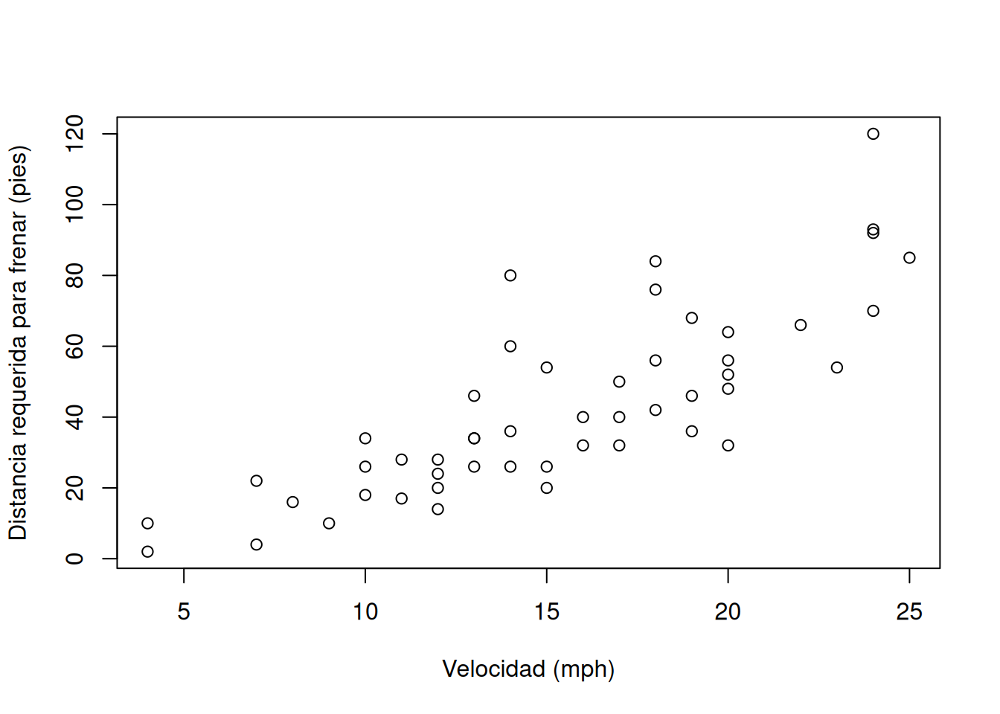
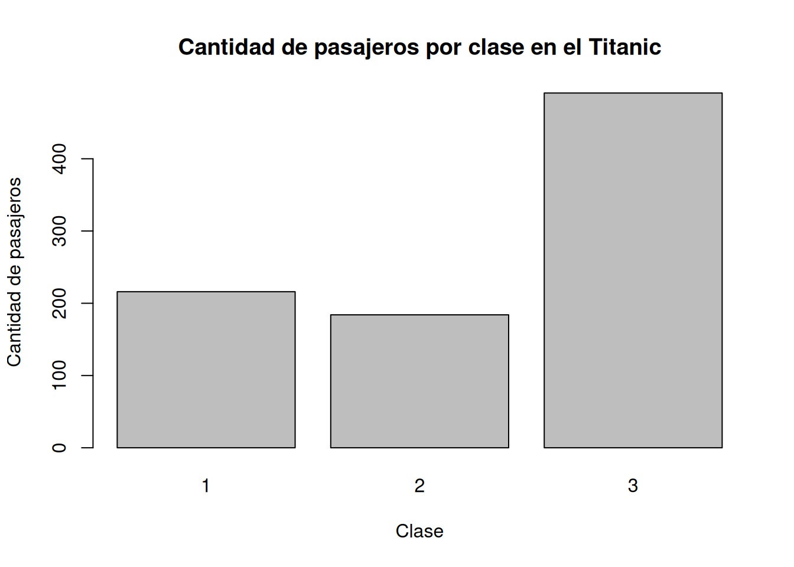
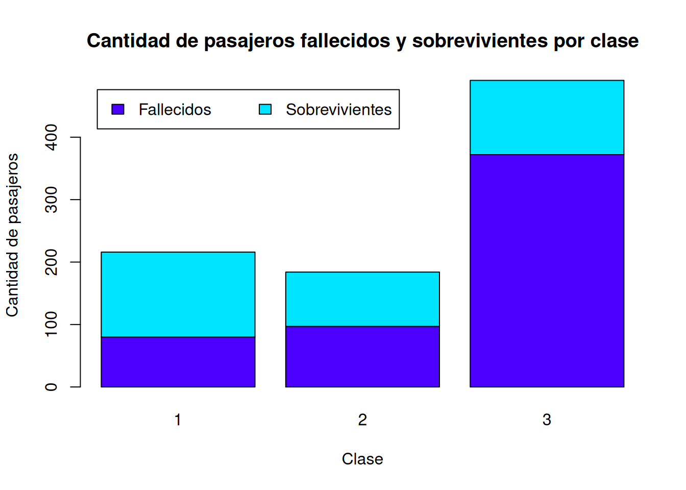
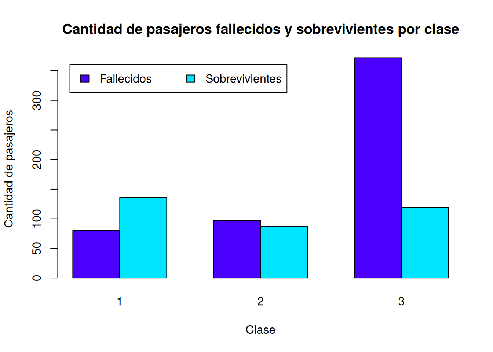
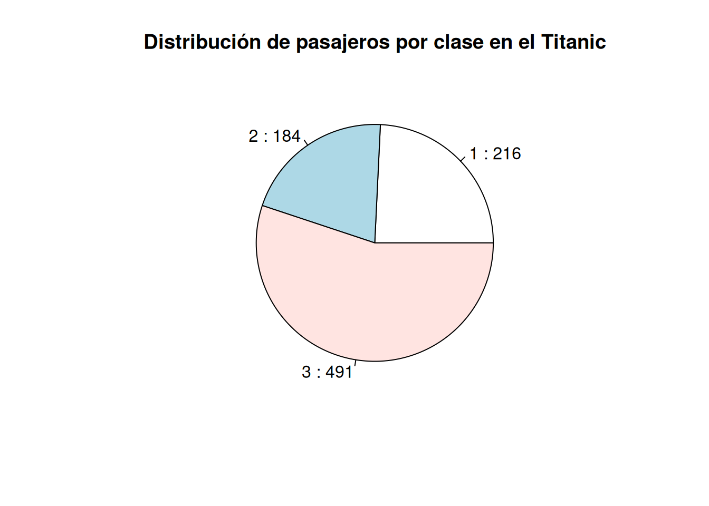
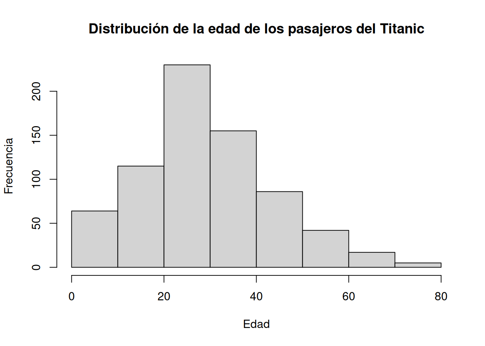

# Crear un vector de números primos
primos <- c(2, 3, 5, 7, 11)
# Mostrar el vector
print(primos)[1] 2 3 5 7 11En este capítulo se introduce el lenguaje de programación R, sus tipos de datos, sus estructuras de control y sus funciones para generación de gráficos estadísticos.
R es un lenguaje de programación y un entorno para graficación y análisis estadístico. Como lenguaje, es interpretado, multiplataforma, de tipado dinámico y multiparadigma. Es un proyecto de software libre que se comparte mediante una licencia GNU GPL.
El código de R se estructura en funciones, las cuales pueden distribuirse en paquetes. Cada paquete contiene un conjunto de funciones relacionadas. Algunos paquetes están incorporados en la instalación base de R y otros deben instalarse separadamente.
La instación base de R incluye una gran variedad de funciones que permiten crear gráficos estadísticos como diagramas de dispersión, histogramas y gráficos de barras, entre otros.
R puede manejar diversos tipos de datos básicos, como números, textos y valores lógicos, entre otros. También tipos de datos compuestos, como factores y data frames. Al igual que otros lenguajes de programación, cuenta con estructuras de control como condicionales y ciclos.
Chang, Winston (2018). R graphics cookbook: Practical recipes for visualizing data (2nd ed.) (capítulo 2). O’Reilly. https://r-graphics.org/
Grolemund, G., & Wickham, H. (2014). Hands-On Programming with R: Write Your Own Functions And Simulations (capítulos 1 - 12). O’Reilly Media. https://rstudio-education.github.io/hopr/
R es un lenguaje de programación y un entorno enfocado en graficación y en análisis estadístico. Fue creado por Ross Ihaka y Robert Gentleman en la Universidad de Auckland, Nueva Zelanda, en 1993. Es ampliamente utilizado en diversas áreas de investigación, entre las que pueden mencionarse aprendizaje automático (machine learning), ciencia de datos (data science) y big data, con aplicaciones en campos como agricultura, biomedicina, bioinformática, finanzas, hidrología, teledetección y geografía entre muchos otros.
Algunas de las principales características del lenguaje de programación R son:
R es un proyecto de software libre que se comparte mediante una licencia GNU General Public Licence (GNU GPL). Esta característica permite que la funcionalidad original de R pueda ser ampliada mediante bibliotecas o paquetes desarrollados por la comunidad de programadores.
La Comprehensive R Archive Network (CRAN) es una red mundial distribuida de servidores que albergan el código y la documentación oficial de R y sus paquetes. Las tasks views de CRAN categorizan la funcionalidad de R de acuerdo con temáticas determinadas.
Para escribir programas en R puede utilizarse una interfaz de línea de comandos, un editor de texto (ej. Visual Studio Code) o un ambiente de desarrollo integrados (IDE, en inglés Integrated Development Environment) como RStudio.
RStudio es el IDE más popular para el lenguaje R. Está disponible en una versión de escritorio (RStudio Desktop) y en una versión para servidor (RStudio Server). Esta última permite la conexión de varios usuarios a través de un navegador web. RStudio se ofrece también como un servicio en la nube, a través de Posit Cloud. La Figura 3.1 muestra la interfaz de RStudio.

Además de edición de código fuente, RStudio contiene capacidades para depurar código y visualizar datos en formatos tabulares, gráficos y de mapas.
Ejercicios
Instale en su computadora:
Cree un usuario en Posit Cloud, para así poder usar RStudio en la nube.
Cree un programa (script) de R en RStudio (con la opción de menú File - New File - R Script) y escriba y ejecute el código utilizado en el capítulo anterior para generar un gráfico que muestre el promedio de estatura de personas adultas por sexo.
En R, prácticamente todo se maneja a través de objetos. Un objeto es cualquier entidad que se guarda en memoria y que R puede reconocer, manipular y procesar. Por ejemplo, un vector, una matriz, un data frame, una lista o incluso una función, son todos objetos en R. Los objetos en R pueden ser de muchos tipos, algunos básicos como números, caracteres y lógicos y otros compuestos como matrices y listas que permiten manejar varios valores conjuntamente.
Por ejemplo, el siguiente bloque de código crea un objeto de tipo vector con el operador de asignación <-. Un vector es una secuencia de elementos del mismo tipo.
# Crear un vector de números primos
primos <- c(2, 3, 5, 7, 11)
# Mostrar el vector
print(primos)[1] 2 3 5 7 11Por su parte, una matriz es una estructura de datos bidimensional en la que todos los elementos deben ser del mismo tipo, al igual que en un vector. Una matriz puede considerarse una colección de vectores organizados en filas y columnas.
# Crear vectores
v1 <- c(1, 2, 3)
v2 <- c(4, 5, 6)
# Combinar vectores como columnas de una matriz
m <- cbind(v1, v2)
# Mostrar la matriz
print(m) v1 v2
[1,] 1 4
[2,] 2 5
[3,] 3 6Uno de los tipos de objetos fundamentales en R para el manejo y análisis de datos es el data frame. Un data frame es una estructura rectangular de filas y columnas, similar a una tabla de datos (ej. las de las hojas de cálculo), en la que cada fila corresponde a una observación y cada columna a una variable. Las columnas pueden ser de diferentes tipos: números, caracteres, lógicos y muchos otros. Las columnas (o las filas) de un data frame pueden considerarse vectores, todos del mismo tamaño.
# Crear vectores
peso <- c(70, 65, 80, 55, 90) # en kilogramos
estatura <- c(1.75, 1.68, 1.82, 1.60, 1.90) # en metros
# Crear dataframe
medidas <- data.frame(peso, estatura)
# Mostrar el dataframe
print(medidas) peso estatura
1 70 1.75
2 65 1.68
3 80 1.82
4 55 1.60
5 90 1.90Las columnas de un data frame pueden retornarse como vectores mediante el operador $.
# Columna (vector) correspondiente a la estatura
medidas$peso[1] 70 65 80 55 90Los data frames permiten realizar operaciones sobre los datos como creación de subconjuntos, ordenamientos, filtrados, cálculos estadísticos (promedio, desviación estándar, mínimo, máximo, etc.) y muchas otras.
Los vectores, las matrices y los data frames se estudiarán con más detalle en este capítulo junto con otros tipos y estructuras de datos de R.
Para efectos de pruebas y ejemplos, la distribución base de R incorpora varios conjuntos de datos que pueden listarse con la función data(). Para obtener información acerca de un conjunto de datos en particular, puede utilizarse el operador ?.
# Información sobre todos los conjuntos de datos incorporados en la distribución base de R
data()
# Información sobre el cojunto de datos "cars"
?cars
# Información sobre el cojunto de datos "mtcars"
?mtcars
# Información sobre el cojunto de datos "iris"
?iris
# Visualización de iris
View(iris)Además, existen muchos sitios en Internet que brindan acceso a conjuntos de datos que pueden utilizarse para pruebas. Por ejemplo:
R, al igual que otros lenguajes de programación, estructura su funcionalidad en unidades de código fuente llamadas funciones. Cada función realiza una tarea específica como, por ejemplo, un cálculo matemático o el procesamiento de una hilera de texto.
Una función tiene un nombre y, opcionalmente, un conjunto de argumentos que especifican los datos de entrada que procesa la función. Los argumentos se escriben entre paréntesis redondos (()) y estos siempre deben incluirse, aún en el caso de que la función no tenga ningún argumento. Si la función tiene varios argumentos, deben separarse mediante comas (,). Por lo general, las funciones retornan un valor como salida.
La función print() recibe como argumento un valor (ej. un texto o un número) para imprimirlo en la pantalla. En el siguiente fragmento de código en R, se utiliza print() para imprimir la hilera “Hola mundo”. Nótese el uso del símbolo # para comentarios (i.e. texto que no es código ejecutable).
# Impresión de una hilera de caracteres
print("Hola mundo")[1] "Hola mundo"La función mean() retorna la media aritmética del argumento de entrada. En el siguiente ejemplo, se calcula la media de los números de un vector creado a su vez con la función c().
# Media aritmética
mean(c(2, 4, 5, 9))[1] 5La función getwd() (get working directory) retorna la ruta del directorio de trabajo de la sesión actual de R. Este es el directorio en el cual R espera encontrar, por ejemplo, archivos de datos.
# Impresión del directorio de trabajo
getwd()[1] "/home/rstudio/2025-i"La función setwd() (set working directory) establece la ruta del directorio de trabajo de la sesión actual de R. Como argumento, recibe una hilera de texto con la ruta.
Note las barras utilizadas para separar los subdirectorios: / (no \)
# Especificación del directorio de trabajo (la ruta debe existir)
setwd("C:/Users/mfvargas")Ejercicios
getwd() y anótela.setwd() a cualquier otro directorio en el que tenga derechos de escritura. Verifique el cambio usando nuevamente getwd().hola.R y escriba ahí el programa “Hola mundo”: cat("Hola mundo")Los argumentos de las funciones tienen nombres que pueden especificarse, en caso de ser necesario, al llamar la función. Los nombres de los argumentos de una función pueden omitirse cuando el orden y la posición de esos argumentos son suficientes para identificarlos. Si se desea cambiar el orden o que el código sea más claro, se pueden indicar los nombres de los argumentos.
En el siguiente ejemplo, se utilizan los argumentos x, xlab y ylab de la función plot(), de la instalación básica de R, para especificar la fuente de datos y las etiquetas de los ejes x e y de un gráfico de dispersión.
# Gráfico de dispersón del conjunto de datos "cars" con etiquetas en los ejes x e y
plot(
x=cars$speed,
y=cars$dist,
xlab="Velocidad (mph)",
ylab="Distancia requerida para frenar (pies)"
)
Ejercicios
Estudie la documentación de la función plot() y agregue al gráfico anterior:
Para obtener ayuda sobre una función desde la línea de comandos de R, puede utilizarse un signo de pregunta (?) seguido del nombre de la función o bien la función help(). Por ejemplo:
# Ayuda de la función setwd()
?setwd
help(setwd)También puede utilizarse la función apropos(), para buscar funciones por palabras clave.
# Búsqueda, por palabras clave, de funciones relacionadas con "mean" (media aritmética). Note las comillas ("").
apropos("mean") [1] ".colMeans" ".rowMeans" "colMeans" "kmeans"
[5] "mean" "mean.Date" "mean.default" "mean.difftime"
[9] "mean.POSIXct" "mean.POSIXlt" "rowMeans" "weighted.mean"La función example() presenta ejemplos sobre el uso de una función.
# Ejemplos de uso de la función mean()
example("mean")
mean> x <- c(0:10, 50)
mean> xm <- mean(x)
mean> c(xm, mean(x, trim = 0.10))
[1] 8.75 5.50Por otra parte, el sitio All R Documentation reúne documentación de funciones de una gran cantidad de paquetes de R.
También puede obtenerse ayuda en buscadores de Internet, como Google, o en sitios de preguntas y respuestas para programadores, como Stack Overflow.
Las funciones de R se distribuyen en paquetes. Cada paquete contiene un conjunto de funciones relacionadas. También hay paquetes que contienen datos (ej. los resultados de un censo).
Para utilizar un paquete, primero debe cargarse (en la memoria del computador) con la función library().
# Carga del paquete stats
library(stats)Algunos paquetes están contenidos en la distribución base de R. Otros deben instalarse con la función install.packages().
En el siguiente ejemplo, se instala el paquete titanic, el cual contiene información sobre los pasajeros durante el viaje inaugural del transatlántico RMS Titanic, resumida según el estatus económico (clase), sexo, edad y supervivencia de cada pasajero.
# Instalación del paquete titanic (note las comillas)
install.packages("titanic")Seguidamente, el paquete titanic se carga con la función library().
# Carga de titanic
library(titanic)View()El conjunto de datos titanic_train puede observarse, con sus observaciones y variables, con la función View(), la cual permite visualizar un conjunto de datos en una tabla.
# Visualización del conjunto de datos titanic_train
View(titanic_train)Este conjunto de datos se utiliza para entrenar modelos de aprendizaje automático (machine learning) para que realicen predicciones (ej. la supervivencia o muerte de un pasajero con base en variables como edad, clase, sexo y otras). Las predicciones del modelo se evalúan con titanic_test, el conjunto de datos de evaluación.
La instalación básica de R, la cual incluye el paquete base y el paquete graphics, ofrece una gran variedad de funciones para elaborar gráficos estadísticos. Esta funcionalidad se enriquece gracias al aporte de paquetes elaborados por terceros, los cuales se estudiarán posteriormente en este curso. Entre los tipos de gráficos que pueden elaborarse con la instalación básica de R están los gráficos de dispersión, los gráficos de barras, los gráficos de pastel y los histogramas.
Un gráfico de barras permite representar variables de un conjunto de datos mediante barras rectangulares de longitud proporcional a los valores representados. Los gráficos de barras se utilizan principalmente para representar datos que involucran variables categóricas. Permiten comparar fácilmente cantidades o números asociados a diferentes categorías. Por ejemplo, se puede usar un gráfico de barras para mostrar la cantidad de ventas de diferentes tipos de productos, la población en diferentes ciudades, o las puntuaciones obtenidas por estudiantes en diferentes materias.
El siguiente gráfico de barras muestra la cantidad de pasajeros por clase en titanic_train, mediante la función barplot(), una de las funciones de graficación básica de R. Esta función recibe como argumento los valores que se desea representar en las barras, por lo que antes se utiliza la función table() para generar una tabla de contingencia con las cantidades de pasajeros que viajaban en cada clase.
# Cantidades de pasajeros por clase
pasajeros_por_clase <- table(titanic_train$Pclass)
# Despliegue
pasajeros_por_clase
##
## 1 2 3
## 216 184 491# Gráfico de barras por clase de pasajero
barplot(
height = pasajeros_por_clase,
main = "Cantidad de pasajeros por clase en el Titanic",
xlab = "Clase",
ylab = "Cantidad de pasajeros"
)
La cantidad de pasajeros en cada clase puede subdividirse en fallecidos y sobrevivientes.
# Cantidades de pasajeros fallecidos y sobrevivientes por clase
# (0 corresponde a fallecidos y 1 a sobrevivientes)
pasajeros_por_clase_sobrevivencia <-
table(titanic_train$Survived, titanic_train$Pclass)
# Despliegue
pasajeros_por_clase_sobrevivencia
##
## 1 2 3
## 0 80 97 372
## 1 136 87 119El siguiente gráfico de barras apiladas muestra la distribución de pasajeros sobrevivientes y fallecidos en cada clase.
# Gráfico de barras apiladas
barplot(
height = pasajeros_por_clase_sobrevivencia,
main = "Cantidad de pasajeros fallecidos y sobrevivientes por clase",
xlab = "Clase",
ylab = "Cantidad de pasajeros",
col = topo.colors(2)
)
# Leyenda
legend(
x = "topleft",
inset = 0.03,
legend = c("Fallecidos", "Sobrevivientes"),
fill = topo.colors(2),
horiz = TRUE
)
La misma información se muestra seguidamente en un gráfico de barras agrupadas. Note el uso del argumento beside.
# Gráfico de barras agrupadas
barplot(
height = pasajeros_por_clase_sobrevivencia,
main = "Cantidad de pasajeros fallecidos y sobrevivientes por clase",
xlab = "Clase",
ylab = "Cantidad de pasajeros",
col = topo.colors(2),
beside = TRUE
)
# Leyenda
legend(
x = "topleft",
inset = 0.03,
legend = c("Fallecidos", "Sobrevivientes"),
fill = topo.colors(2),
horiz = TRUE
)
Los gráficos de pastel se utilizan para mostrar proporciones o porcentajes, representando la composición de un todo. Son especialmente útiles para resaltar cómo se divide un conjunto en categorías, donde cada segmento del pastel (slice o “rebanada”) representa la proporción o porcentaje de esa categoría dentro del total. Por lo tanto, son más adecuados para visualizar datos categóricos o cualitativos, no para datos numéricos continuos.
La cantidad de pasajeros por clase en titanic_train también puede mostrarse en un gráfico de pastel, mediante la función pie de la instalación básica de R.
# Gráfico de pastel por clase de pasajero
pie(
x = pasajeros_por_clase,
main = "Distribución de pasajeros por clase en el Titanic",
labels = paste(names(pasajeros_por_clase), ":", pasajeros_por_clase)
)
Un histograma es una representación gráfica de la distribución de una variable numérica en forma de barras (en este caso, llamadas en inglés bins). La longitud de cada barra representa la frecuencia de un rango de valores de la variable.
En la instalación básica de R, los histogramas se implementan mendiante la función hist().
hist(
x = titanic_train$Age,
breaks = 8,
main = "Distribución de la edad de los pasajeros del Titanic",
xlab = "Edad",
ylab = "Frecuencia"
)
Ejercicios
En esta sección se estudian varias operaciones para manipular data frames mediante la sintaxis y las funciones base de R:
Para ilustrar las operaciones, se utiliza el conjunto de datos Netflix Movies and TV Shows.
# Importar el CSV desde el repositorio del curso en GitHub
netflix <- read.csv(
file = "https://raw.githubusercontent.com/gf0604-procesamientodatosgeograficos/2025-i/refs/heads/main/datos/netflix/netflix_titles.csv"
)A esta operación se le llama también “filtrado de datos”. Se implementa con la sintaxis dataframe[filas, columnas].
Las filas y las columnas pueden especificarse mediante vectores, como en los siguientes ejemplos.
# Subconjunto de las 5 primeras filas y todas las columnas
primeras_filas <- netflix[1:5, ]
# Despliegue
print(primeras_filas) show_id type title director
1 s1 Movie Dick Johnson Is Dead Kirsten Johnson
2 s2 TV Show Blood & Water
3 s3 TV Show Ganglands Julien Leclercq
4 s4 TV Show Jailbirds New Orleans
5 s5 TV Show Kota Factory
cast
1
2 Ama Qamata, Khosi Ngema, Gail Mabalane, Thabang Molaba, Dillon Windvogel, Natasha Thahane, Arno Greeff, Xolile Tshabalala, Getmore Sithole, Cindy Mahlangu, Ryle De Morny, Greteli Fincham, Sello Maake Ka-Ncube, Odwa Gwanya, Mekaila Mathys, Sandi Schultz, Duane Williams, Shamilla Miller, Patrick Mofokeng
3 Sami Bouajila, Tracy Gotoas, Samuel Jouy, Nabiha Akkari, Sofia Lesaffre, Salim Kechiouche, Noureddine Farihi, Geert Van Rampelberg, Bakary Diombera
4
5 Mayur More, Jitendra Kumar, Ranjan Raj, Alam Khan, Ahsaas Channa, Revathi Pillai, Urvi Singh, Arun Kumar
country date_added release_year rating duration
1 United States September 25, 2021 2020 PG-13 90 min
2 South Africa September 24, 2021 2021 TV-MA 2 Seasons
3 September 24, 2021 2021 TV-MA 1 Season
4 September 24, 2021 2021 TV-MA 1 Season
5 India September 24, 2021 2021 TV-MA 2 Seasons
listed_in
1 Documentaries
2 International TV Shows, TV Dramas, TV Mysteries
3 Crime TV Shows, International TV Shows, TV Action & Adventure
4 Docuseries, Reality TV
5 International TV Shows, Romantic TV Shows, TV Comedies
description
1 As her father nears the end of his life, filmmaker Kirsten Johnson stages his death in inventive and comical ways to help them both face the inevitable.
2 After crossing paths at a party, a Cape Town teen sets out to prove whether a private-school swimming star is her sister who was abducted at birth.
3 To protect his family from a powerful drug lord, skilled thief Mehdi and his expert team of robbers are pulled into a violent and deadly turf war.
4 Feuds, flirtations and toilet talk go down among the incarcerated women at the Orleans Justice Center in New Orleans on this gritty reality series.
5 In a city of coaching centers known to train India’s finest collegiate minds, an earnest but unexceptional student and his friends navigate campus life.# Subconjunto de las 5 primeras filas y las 3 primeras columnas
primeras_filas <- netflix[1:5, 1:3]
# Despliegue
print(primeras_filas) show_id type title
1 s1 Movie Dick Johnson Is Dead
2 s2 TV Show Blood & Water
3 s3 TV Show Ganglands
4 s4 TV Show Jailbirds New Orleans
5 s5 TV Show Kota Factory# Subconjunto de las 5 primeras filas y
# las columnas show_id, type, title, director y country
primeras_filas <- netflix[
1:5,
c("show_id", "type", "title", "director", "country")
]
# Despliegue
print(primeras_filas) show_id type title director country
1 s1 Movie Dick Johnson Is Dead Kirsten Johnson United States
2 s2 TV Show Blood & Water South Africa
3 s3 TV Show Ganglands Julien Leclercq
4 s4 TV Show Jailbirds New Orleans
5 s5 TV Show Kota Factory IndiaLas filas a filtrar también pueden especificarse mediante expresiones lógicas.
# Películas dirigidas por Clint Eastwood
eastwood <- netflix[
netflix$director == "Clint Eastwood",
c("show_id", "type", "title", "director", "release_year")
]
# Despliegue
print(eastwood) show_id type title director release_year
351 s351 Movie Space Cowboys Clint Eastwood 2000
800 s800 Movie Million Dollar Baby Clint Eastwood 2004
820 s820 Movie The Outlaw Josey Wales Clint Eastwood 1976
943 s943 Movie Mystic River Clint Eastwood 2003
6889 s6889 Movie Gran Torino Clint Eastwood 2008
7092 s7092 Movie Invictus Clint Eastwood 2009
7127 s7127 Movie Jersey Boys Clint Eastwood 2014Nótese el uso de $ para especificar la columna y del operador de comparación == (igualdad).
# Películas dirigidas por Clint Eastwood y estrenadas a partir del año 2000
eastwood_2000 <- netflix[
netflix$director == "Clint Eastwood" & netflix$release_year >= 2000,
c("show_id", "type", "title", "director", "release_year")
]
# Despliegue
print(eastwood_2000) show_id type title director release_year
351 s351 Movie Space Cowboys Clint Eastwood 2000
800 s800 Movie Million Dollar Baby Clint Eastwood 2004
943 s943 Movie Mystic River Clint Eastwood 2003
6889 s6889 Movie Gran Torino Clint Eastwood 2008
7092 s7092 Movie Invictus Clint Eastwood 2009
7127 s7127 Movie Jersey Boys Clint Eastwood 2014El operador lógico & (AND) especifica que ambas expresiones lógicas deben cumplirse (ser verdaderas).
La función order() permite ordenar un data frame según una o varias columnas, al retornar los índices de las filas en el orden deseado.
# Ordenar las películas dirigidas por Clint Eastwood
# por orden descendente de año de estreno
eastwood_ordenado <- eastwood[
order(eastwood$release_year, decreasing = TRUE),
]
# Despliegue
print(eastwood_ordenado) show_id type title director release_year
7127 s7127 Movie Jersey Boys Clint Eastwood 2014
7092 s7092 Movie Invictus Clint Eastwood 2009
6889 s6889 Movie Gran Torino Clint Eastwood 2008
800 s800 Movie Million Dollar Baby Clint Eastwood 2004
943 s943 Movie Mystic River Clint Eastwood 2003
351 s351 Movie Space Cowboys Clint Eastwood 2000
820 s820 Movie The Outlaw Josey Wales Clint Eastwood 1976En un data frame, una columna puede crearse o modificarse con los operadores $ y <-.
# Vector de valores de sexo
vector_sexo <- c(
"mujer", "hombre", "mujer", "mujer", "mujer", "hombre", "mujer", "hombre", "hombre", "hombre"
)
# Vector de peso en kilogramos
vector_peso_kg <- c(
51.0, 98.5, 91.6, 60.6, 59.1, 59.2, 65.2, 76.2, 71.6, 64.6
)
# Definir un data frame
personas <- data.frame(
sexo = vector_sexo,
peso_kg = vector_peso_kg
)
# Agregar una nueva columna para el peso en libras
personas$peso_lb <- personas$peso_kg * 2.205
# Despliegue
print(personas) sexo peso_kg peso_lb
1 mujer 51.0 112.4550
2 hombre 98.5 217.1925
3 mujer 91.6 201.9780
4 mujer 60.6 133.6230
5 mujer 59.1 130.3155
6 hombre 59.2 130.5360
7 mujer 65.2 143.7660
8 hombre 76.2 168.0210
9 hombre 71.6 157.8780
10 hombre 64.6 142.4430La distribución base de R permite agrupar y sumarizar datos de varias formas.
Por ejemplo, la función table() cuenta la cantidad de filas correspondientes a cada valor de una variable categórica.
# Cantidad de películas o series por clasificación
netflix_conteo_x_clasificacion <- table(netflix$rating)
# Despliegue
print(netflix_conteo_x_clasificacion)
66 min 74 min 84 min G NC-17 NR PG
4 1 1 1 41 3 80 287
PG-13 R TV-14 TV-G TV-MA TV-PG TV-Y TV-Y7
490 799 2160 220 3207 863 307 334
TV-Y7-FV UR
6 3 La tabla que retorna table() puede convertirse a un data frame con la función as.data.frame() para ordenarse o procesarse de alguna otra forma.
# Convertir a data frame
netflix_conteo_x_clasificacion_df <- as.data.frame(
x = netflix_conteo_x_clasificacion
)
# Renombrar las columnas
names(netflix_conteo_x_clasificacion_df) <- c(
"rating", "count"
)
# Ordenar
netflix_conteo_x_clasificacion_df_ordenado <- netflix_conteo_x_clasificacion_df[
order(netflix_conteo_x_clasificacion_df$count, decreasing = TRUE),
]
# Despliegue de las 10 clasificaciones más frecuentes
print(netflix_conteo_x_clasificacion_df_ordenado[1:10, ]) rating count
13 TV-MA 3207
11 TV-14 2160
14 TV-PG 863
10 R 799
9 PG-13 490
16 TV-Y7 334
15 TV-Y 307
8 PG 287
12 TV-G 220
7 NR 80Por su parte, la función aggregate() calcula estadísticas (ej. promedios, mínimos, máximos) para grupos formados con base en los valores de una o varias variables categóricas.
# Promedio de peso en kg por sexo
promedio_estatura_x_sexo <- aggregate(
data = personas,
peso_kg ~ sexo,
FUN = mean,
na.rm = TRUE # para eliminar valores NA (vacíos)
)
# Despliegue
print(promedio_estatura_x_sexo) sexo peso_kg
1 hombre 74.02
2 mujer 65.50La “fórmula” peso_kg ~ sexo se utiliza para indicar cómo se deben agrupar los datos:
~ se lee como “en función de”.peso_kg), la que se quiere resumir o analizar.sexo), la que se usa para agrupar.El siguiente programa ejemplifica algunas de las funciones de manipulación de datos y graficación de la distribución base de R. En las salidas, se utilizan las funciones pdf() y dev.off() para almacenar los gráficos en un archivo PDF.
#
# Análisis de datos de la Encuesta Nacional de Salud y Nutrición (NHANES)
#
# ENTRADA
# Importar datos de NHANES (National Health and Nutrition Examination Survey)
nhanes <- read.csv(
file = "https://raw.githubusercontent.com/gf0604-procesamientodatosgeograficos/2025-i/refs/heads/main/datos/nchs/nhanes.csv"
)
# PROCESAMIENTO
# 1. Obtener cantidades de personas por nivel de educación formal
# Agrupar y contar por nivel de educación formal
cantidad_x_educacion <- table(nhanes$Education)
# Convertir a data frame
cantidad_x_educacion <- as.data.frame(
cantidad_x_educacion
)
# Renombrar las columnas
names(cantidad_x_educacion) <- c("educacion", "cantidad")
# Ordenar por cantidad
cantidad_x_educacion <- cantidad_x_educacion[
order(cantidad_x_educacion$c, decreasing = TRUE),
]
# 2. Obtener datos de estatura y peso de mujeres
# Filtrar datos de estatura y peso de mujeres
mujeres <- nhanes[nhanes$Gender == "female", c("Height", "Weight")]
# SALIDA
# Abrir archivo PDF
pdf("analisis-nhanes-graficos.pdf", width = 12, height = 6)
# Márgenes (arriba, izquierda, abajo, derecha)
par(mar = c(4, 7, 4, 2))
# 1. Gráfico de barras: Cantidad de personas por nivel de educación formal
barplot(
height = cantidad_x_educacion$cantidad,
names.arg = cantidad_x_educacion$educacion,
main = "Cantidad de personas por nivel de educación formal",
xlab = "Nivel de educación formal",
ylab = "Cantidad de personas",
las = 1,
cex.names = 0.9,
col = "black"
)
# 2. Gráfico de dispersión: estatura vs. peso de mujeres
plot(
x = mujeres$Height,
y = mujeres$Weight,
main = "Estatura vs. peso de mujeres",
xlab = "Estatura (cm)",
ylab = "Peso (kg)",
pch = 19,
col = "red"
)
# Cerrar archivo PDF
dev.off()R puede trabajar con varios tipos de datos básicos, entre los que están números, caracteres (i.e. textos) y lógicos. También puede trabajar con tipos compuestos, como factores y data frames.
Como se mencionó, R proporciona acceso a los datos a través de objetos. Un objeto es una entidad que tiene asociadas propiedades (i.e. datos) y métodos (i.e. funciones) para manipular esas propiedades. Un objeto puede ser, por ejemplo, un número, una hilera de texto, un vector o una matriz. R también permite que el programador defina sus propios objetos.
Hay muchas formas de crear objetos en R. Una de las más sencillas es con los operadores de asignación. Estos son = y <- (o ->). Por ejemplo, las siguientes sentencias crean un número, un texto y un vector.
# Número
x <- 10
x
## [1] 10
# Otro número
20 -> y
y
## [1] 20
# Hilera de caracteres
nombre <- 'Manuel'
nombre
## [1] "Manuel"
# Vector de hileras de caracteres
dias <- c('Domingo', 'Lunes', 'Martes', 'Miércoles', 'Jueves', 'Viernes', 'Sábado')
dias
## [1] "Domingo" "Lunes" "Martes" "Miércoles" "Jueves" "Viernes"
## [7] "Sábado"Tanto x, como nombre como dias son variables. Una variable es una etiqueta que se le asigna a un objeto. Una variable debe comenzar con una letra.
El tipo de un objeto puede consultarse con la función typeof(). Por ejemplo:
typeof(x)
## [1] "double"
typeof(y)
## [1] "double"
typeof(nombre)
## [1] "character"
typeof(dias)
## [1] "character"A continuación, se describen con más detalle algunos de los tipos de datos utilizados en el lenguaje R.
R define seis tipos de datos básicos. En esta sección, se describen los más utilizados durante este curso.
Pueden ser enteros (integer) o decimales (double). Se utilizan en diversos tipos de operaciones, incluyendo las aritméticas (ej. suma, resta, multiplicación, división).
# Declaración de variables numéricas
x <- 5
y <- 0.5
# Suma
x + y
## [1] 5.5
# Tipos de datos numéricos
typeof(x)
## [1] "double"
typeof(y)
## [1] "double"
typeof(x + y)
## [1] "double"Nótese que al declararse una variable numérica, ya sea que tenga o no punto decimal, R la considera por defecto de tipo double. Para que se considere de tipo integer, debe utilizarse el sufijo L o la función as.integer().
# Números enteros
x <- 10L
y <- as.integer(15)
# Multiplicación
x * y
## [1] 150
# Tipos de datos enteros
typeof(x)
## [1] "integer"
typeof(y)
## [1] "integer"
typeof(x * y)
## [1] "integer"Se utilizan para representar textos. Deben estar entre comillas simples ('') o dobles ("").
# Hileras de caracteres
nombre <- "María"
apellido <- "Pérez"
# Concatenación mediante la función paste()
paste(nombre, apellido)
## [1] "María Pérez"Los objetos lógicos (también llamados booleanos) tienen dos posibles valores: verdadero (TRUE) o falso (FALSE).
# Variable lógica
a <- 1 < 2
a
## [1] TRUE
# Variable lógica
b <- 1 > 2
b
## [1] FALSELas expresiones lógicas pueden combinarse con operadores como:
& (Y, en inglés AND)| (O, en inglés OR)! (NO, en inglés NOT)# Operador lógico AND
(1 < 2) & (3 < 4)
## [1] TRUE
# Operador lógico OR
(2 + 2 == 5) | (20 <= 10)
## [1] FALSE
# Operador lógico NOT
!(2 + 2 == 5)
## [1] TRUEUn vector es una estructura unidimensional que combina objetos del mismo tipo.
Los vectores pueden definirse de varias formas como, por ejemplo, con la función c() (del inglés combine):
# Definición de un vector de números
vector_numeros <- c(1, 7, 32, 45, 57)
vector_numeros
## [1] 1 7 32 45 57
# Definición de un vector de hileras de caracteres
vector_nombres <- c("Álvaro", "Ana", "Berta", "Bernardo")
vector_nombres
## [1] "Álvaro" "Ana" "Berta" "Bernardo"Los vectores también pueden crearse con el operador :, el cual especifica una secuencia (i.e. una lista ordenada):
# Definición de un vector de números con la secuencia de 1 a 10
vector_secuencia <- 1:10
vector_secuencia
## [1] 1 2 3 4 5 6 7 8 9 10
# Definición de un vector de números con la secuencia de -5 a 5
vector_secuencia <- -5:5
vector_secuencia
## [1] -5 -4 -3 -2 -1 0 1 2 3 4 5
# Definición de un vector de números con la secuencia de -0.5 a 3.7
vector_secuencia <- -0.5:3.7
vector_secuencia
## [1] -0.5 0.5 1.5 2.5 3.5La función seq() también crea un vector con base en una secuencia y permite especificar argumentos como un valor de incremento y la longitud de la secuencia.
# Definición de un vector de números en secuencia de 1 a 10
vector_secuencia <- seq(1, 10)
vector_secuencia
## [1] 1 2 3 4 5 6 7 8 9 10
# Definición de un vector de números en secuencia de 0.5 a 15.3, con incremento de 2
vector_secuencia <- seq(from=0.5, to=15.3, by=2)
vector_secuencia
## [1] 0.5 2.5 4.5 6.5 8.5 10.5 12.5 14.5
# Definición de un vector de números en secuencia de 1.5 a 9.4, con longitud de 4
vector_secuencia <- seq(from=1.5, to=9.4, length.out=4)
vector_secuencia
## [1] 1.500000 4.133333 6.766667 9.400000Los elementos de un vector se acceden a través de sus índices (i.e. posiciones). La primera posición corresponde al índice 1, la segunda al índice 2 y así sucesivamente. Los índices se especifican entre paréntesis cuadrados ([]), ya sea para una posición específica o para un rango de posiciones. También es posible especificar los índices que se desea excluir.
# Vector de nombres de países
paises <- c("Argentina", "Francia", "China", "Australia", "México")
paises
## [1] "Argentina" "Francia" "China" "Australia" "México"
# Elemento en el índice 3
paises[3]
## [1] "China"El operador : puede utilizarse para especificar un rango de índices:
# Elementos entre los índices 2 y 4 (2, 3 y 4)
paises[2:4]
## [1] "Francia" "China" "Australia"Con la función c(), es posible especificar un conjunto de índices particulares:
# Elementos entre los índices 1, 4 y 5
paises[c(1, 4, 5)]
## [1] "Argentina" "Australia" "México"Los números negativos pueden usarse para excluir índices:
# Exclusión de los índices 3 y 4
paises[c(-3, -4)]
## [1] "Argentina" "Francia" "México"Los valores lógicos TRUE y FALSE también pueden usarse para incluir y excluir índices de un vector:
# Se incluyen los índices 1, 2 y 4; y se excluyen los índices 3 y 5
paises[c(TRUE, TRUE, FALSE, TRUE, FALSE)]
## [1] "Argentina" "Francia" "Australia"En los vectores pueden aplicarse operaciones aritméticas:
a <- c(1, 3, 5, 7)
b <- c(2, 4, 6, 8)
# Suma de vectores
a + b
## [1] 3 7 11 15
# Multiplicación de vectores
a * b
## [1] 2 12 30 56Y también pueden realizarse operaciones relacionales:
# Comparación con el operador <
a < b
## [1] TRUE TRUE TRUE TRUEUna matriz es una estructura bidimensional de filas y columnas.
Las matrices se definen mediante la función matrix().
# Definición de una matriz de 3 x 3 con elementos de la secuencia 1:9 distribuidos en las columnas
m <- matrix(1:9, nrow=3, ncol=3)
m
## [,1] [,2] [,3]
## [1,] 1 4 7
## [2,] 2 5 8
## [3,] 3 6 9
# Definición de una matriz de 3 x 3 con elementos de la secuencia 1:9 distribuidos en las filas
m <- matrix(1:9, nrow=3, ncol=3, byrow=TRUE)
m
## [,1] [,2] [,3]
## [1,] 1 2 3
## [2,] 4 5 6
## [3,] 7 8 9
# Definición de una matriz de 3 x 2 con nombres para las filas y las columnas
datos <- c(18, 500, 25, 1000, 30, 2000)
filas <- c("Ana", "Mario", "Laura")
columnas <- c("Edad", "Salario")
m <- matrix(datos, nrow=3, ncol=2, byrow=TRUE, dimnames=list(filas, columnas))
m
## Edad Salario
## Ana 18 500
## Mario 25 1000
## Laura 30 2000La función list() se utiliza, en este caso, para combinar vectores. En general, se usa para combinar datos de cualquier tipo.
La indexación de matrices es similar a la de vectores, pero deben especificarse índices tanto para filas como para columnas.
# Elemento en la posición [2,2] (segunda fila, segunda columna)
m[2, 2]
## [1] 1000
# Elementos de la primera fila
m[1,]
## Edad Salario
## 18 500
# Elementos de la segunda columna
m[, 2]
## Ana Mario Laura
## 500 1000 2000
# Elementos de las filas 1 y 2
m[1:2, ]
## Edad Salario
## Ana 18 500
## Mario 25 1000
# Elementos de la fila "Mario"
m["Mario", ]
## Edad Salario
## 25 1000
# Elementos de la columna "Salario"
m[, "Salario"]
## Ana Mario Laura
## 500 1000 2000De manera similar a los vectores, en las matrices pueden realizarse operaciones aritméticas y relacionales.
a <- matrix(1:4, nrow=2, ncol=2)
a
## [,1] [,2]
## [1,] 1 3
## [2,] 2 4
b <- matrix(5:8, nrow=2, ncol=2)
b
## [,1] [,2]
## [1,] 5 7
## [2,] 6 8
# Suma de matrices
a + b
## [,1] [,2]
## [1,] 6 10
## [2,] 8 12
# Multiplicación de matrices
a * b
## [,1] [,2]
## [1,] 5 21
## [2,] 12 32
# Comparación de matrices con el operador >
a > b
## [,1] [,2]
## [1,] FALSE FALSE
## [2,] FALSE FALSEUn data frame es una estructura bidimensional similar a lo que comúnmente se conoce como una tabla. Sus filas corresponden a las observaciones de un conjunto de datos y sus columnas a las variables. Internamente, se componen de varios vectores, factores y/o matrices de la misma longitud. La definición de un data frame puede incluir nombres para cada observación y para cada variable. Los data frames implementan un conjunto de funciones similares a las de una hoja electrónica o una tabla de una base de datos relacional. Son fundamentales para el manejo de datos en R.
La función data.frame() crea un data frame a partir de vectores que serán las columnas del data frame.
# Vector de nombres de países
paises <-
c("Panamá",
"Costa Rica",
"Nicaragua",
"El Salvador",
"Honduras",
"Guatemala",
"Belice")
# Vector de cantidades de habitantes de cada país (en millones)
poblaciones <- c(4.1, 5.0, 6.2, 6.4, 9.2, 16.9, 0.3)
# Creación de un data frame a partir de los dos vectores
poblaciones_paises <-
data.frame(
pais = paises,
poblacion = poblaciones
)
# Impresión del data frame
poblaciones_paises
## pais poblacion
## 1 Panamá 4.1
## 2 Costa Rica 5.0
## 3 Nicaragua 6.2
## 4 El Salvador 6.4
## 5 Honduras 9.2
## 6 Guatemala 16.9
## 7 Belice 0.3Los datos de un data frame pueden accederse principalmente de dos formas. La primera es mediante la misma sintaxis [fila, columna] que se utiliza en las matrices.
# Fila 1
poblaciones_paises[1, ]
## pais poblacion
## 1 Panamá 4.1
# Filas 1, 5 y 7
poblaciones_paises[c(1, 5, 7), ]
## pais poblacion
## 1 Panamá 4.1
## 5 Honduras 9.2
## 7 Belice 0.3
# Columna 2
poblaciones_paises[, 2]
## [1] 4.1 5.0 6.2 6.4 9.2 16.9 0.3
# Fila 1, columna 2
poblaciones_paises[1, 2]
## [1] 4.1
# Filas 1:4, columna 2
poblaciones_paises[1:4, 2]
## [1] 4.1 5.0 6.2 6.4Además, mediante el operador $, es posible acceder a las columnas (i.e. variables) del data frame.
# Columna de nombres de países
poblaciones_paises$pais
## [1] "Panamá" "Costa Rica" "Nicaragua" "El Salvador" "Honduras"
## [6] "Guatemala" "Belice"
# Modificación de los valores de toda una columna
poblaciones_paises_2 <- poblaciones_paises # copia del dataframe original
poblaciones_paises_2$poblacion = poblaciones_paises$poblacion*2
poblaciones_paises_2
## pais poblacion
## 1 Panamá 8.2
## 2 Costa Rica 10.0
## 3 Nicaragua 12.4
## 4 El Salvador 12.8
## 5 Honduras 18.4
## 6 Guatemala 33.8
## 7 Belice 0.6La notación de paréntesis cuadrados ([]) y el signo de dólar ($) también permite crear subconjuntos con base en expresiones lógicas.
# Ejemplos de uso de la notación $
# Países con población mayor a 6 millones de habitantes
poblaciones_paises[poblaciones_paises$poblacion > 6,] pais poblacion
3 Nicaragua 6.2
4 El Salvador 6.4
5 Honduras 9.2
6 Guatemala 16.9R proporciona una gran variedad de funciones para manejar data frames. Las siguientes son algunas de las más utilizadas.
La función read.table() lee los datos contenidos en un archivo de texto y los retorna en un data frame. read.csv() es una función derivada, con valores por defecto orientados a los archivos de valores separados por comas (CSV, Comma Separated Values). Como argumento principal, read.csv() recibe la ruta del archivo CSV, el cual puede encontrarse en un disco local, en la Web o en otra ubicación.
# Lectura de archivo CSV ubicado en la Web
covid <-
read.csv(
"https://raw.githubusercontent.com/pf0953-programacionr/2022-ii/main/datos/cepredenac/covid/covid-20210422.csv"
)
# Despliegue de los datos del data frame
covid
## pais fallecidos recuperados activos positivos
## 1 Panamá 6198 351949 3845 361992
## 2 Costa Rica 3125 199779 32370 235274
## 3 Guatemala 7345 194075 16725 218145
## 4 Honduras 4981 77020 121358 203359
## 5 El Salvador 2089 64208 1864 68161
## 6 Belice 318 12164 114 12596
## 7 Nicaragua 181 5212 57 5450La función str() despliega la estructura de un data frame u otro objeto R.
# Estructura del data frame
str(poblaciones_paises)'data.frame': 7 obs. of 2 variables:
$ pais : chr "Panamá" "Costa Rica" "Nicaragua" "El Salvador" ...
$ poblacion: num 4.1 5 6.2 6.4 9.2 16.9 0.3La función summary() proporciona un resumen de los contenidos de un data frame:
# Resumen de los contenidos del data frame
summary(poblaciones_paises) pais poblacion
Length:7 Min. : 0.300
Class :character 1st Qu.: 4.550
Mode :character Median : 6.200
Mean : 6.871
3rd Qu.: 7.800
Max. :16.900 La función View() invoca un visor de datos que permite visualizar un objeto R en un formato de tabla en una hoja de cálculo. Ejecute en su computadora la siguiente línea de código para apreciar el funcionamiento de View().
# Vista de los casos de COVID-19
View(covid, "Casos de COVID-19 en Centramérica")Los factores se utilizan para representar datos categóricos. Un factor corresponde a un conjunto de categorías correspondientes a un concepto (ej. [“Sí”, “No”], [“Casado”, “Soltero”], [“Alto”, “Medio”, “Bajo”]).
Internamente, los factores se representan en R como números enteros con etiquetas asociadas. A pesar de que los factores parecen (y pueden funcionar como) hileras de caracteres, en realidad son números y debe tenerse cuidado de no manejarlos como caracteres.
Los elementos de un factor se denominan niveles (levels) y, por defecto, se almacenan en orden alfabético.
Un factor se crea con la función factor().
# Factor de valores de sexo
sexo <- factor(c("Masculino", "Femenino", "Femenino", "Masculino"))R proporciona una gran variedad de funciones para manejar factores. Seguidamente, se ejemplifican algunas de estas.
# Etiquetas de los niveles
levels(sexo)
## [1] "Femenino" "Masculino"
# Cantidad de niveles
nlevels(sexo)
## [1] 2
# Conteo de elementos de cada uno de los niveles del factor
table(sexo)
## sexo
## Femenino Masculino
## 2 2Las fechas se manejan en R mediante un tipo especial que permite realizar operaciones como diferencias, agrupamientos y otras. Internamente, una fecha en R se almacena como un número que representa la cantidad de días transcurridos desde el 1 de enero de 1970 (1970-01-01).
La función Sys.Date() retorna la fecha actual.
# Fecha actual
fecha_actual <- Sys.Date()
fecha_actual
## [1] "2025-06-03"
# Tipo de datos
typeof(fecha_actual)
## [1] "double"
# Clase
class(fecha_actual)
## [1] "Date"La función as.Date() convierte datos entre los tipos fecha y carácter, de acuerdo con un formato. El formato que se usa por defecto (y el recomendado) es el que corresponde a la norma ISO 8601 (ej. 2023-12-03), pero pueden emplearse otros también.
# Conversión de fecha en formato año-mes-día
fecha_caracter_01 <- "2020-01-01"
fecha_01 <- as.Date(fecha_caracter_01, format="%Y-%m-%d")
fecha_01[1] "2020-01-01"# Conversión de fecha en formato día/mes/año
fecha_caracter_02 <- "31/01/2020"
fecha_02 <- as.Date(fecha_caracter_02, format="%d/%m/%Y")
fecha_02[1] "2020-01-31"# Diferencia entre fechas
fecha_02 - fecha_01Time difference of 30 daysHay una lista de formatos de fechas en Date Formats in R - R-bloggers.
Además de todas las funciones disponibles en la distribución base de R y en sus diferentes paquetes, R permite que los programadores definan sus propias funciones.
Toda función tiene tres partes esenciales:
Para programar una función, debe definirse cada una de esas partes por medio de la palabra reservada function function().
Por ejemplo, la siguiente función calcula la nota final de un curso con base en los argumentos correspondientes a los promedios de exámenes, proyectos y tareas.
# Función que calcula la nota final de un curso
nota_final <- function(promedio_examenes,
promedio_proyectos,
promedio_tareas) {
factor_examenes <- promedio_examenes * 0.5
factor_proyectos <- promedio_proyectos * 0.4
factor_tareas <- promedio_tareas * 0.1
return(factor_examenes + factor_proyectos + factor_tareas)
}La función return() es la que define el valor de retorno de la función. Si no se incluye, la función retorna la última expresión evaluada.
Ahora que está definida, la función nota_final() puede ser “llamada”, con diferentes argumentos:
# Si ni se incluyen los nombres de los argumentos,
# la función asume que se ingresan en el mismo orden en el que fueron definidos
nota_final(100, 50, 0)
## [1] 70
# El uso de los nombres de argumentos
# permite modificar su orden
nota_final(promedio_examenes = 100, promedio_tareas = 0, promedio_proyectos = 50)
## [1] 70Si se desea darle al usuario la opción de omitir algunos argumentos, se les puede asignar un valor por defecto.
Seguidamente, la función nota_final() se redefine asignando valores por defecto a algunos de los argumentos:
# Redefinición de la función nota final,
# con valores por defecto para los argumentos
nota_final <- function(promedio_examenes,
promedio_proyectos = 0,
promedio_tareas = 0) {
factor_examenes <- promedio_examenes * 0.5
factor_proyectos <- promedio_proyectos * 0.4
factor_tareas <- promedio_tareas * 0.1
# Al no llamarse a la función return(), se retorna la última expresión:
factor_examenes + factor_proyectos + factor_tareas
}
# Se utiliza el valor por defecto (0) para el argumento promedio_tareas
nota_final(promedio_examenes = 100, promedio_proyectos = 50)
## [1] 70
# Se llama la función usando la posición del primer argumento y el nombre del segundo
nota_final(100, promedio_proyectos = 50)
## [1] 70Ejercicios
celsius_a_fahrenheit() que reciba como argumento una cantidad en grados Celsius y retorne el equivalente en grados Fahrenheit.fahrenheit_a_celsius() que reciba como argumento una cantidad en grados Fahrenheit y retorne el equivalente en grados Celsius.imc() para calcular el índice de masa corporal (IMC) de una persona con base en su peso (en kilogramos) y su estatura (en metros).Las sentencias condicionales evalúan una expresión lógica (i.e. condición) y ejecutan, o no, un bloque de intrucciones dependiendo de si la expresión es verdadera (TRUE) o falsa (FALSE). Permiten que los programas “tomen decisiones” y varíen su curso de acción.
Los condicionales en R se implementa mediante la sentencia if y sus cláusulas else y else if.
ifLa sentencia if evalúa una condición (i.e. una expresión lógica) y ejecuta un bloque de instrucciones, si es verdadera. El bloque se delimita con los caracteres de “llaves”: {}.
# Sintaxis de la sentencia if
if (condicion) {
# bloque de instrucciones a ejecutar si la condicion es verdadera
}Por ejemplo:
# Edad de una persona
edad <- 25
# Se utiliza la sentencia if para determinar
# si la persona es adulta
if (edad >= 18) {
print("Adulto")
}
## [1] "Adulto"Ya sea que se ejecute o no el bloque del if, el programa continúa con las instrucciones que siguen al bloque, si las hay.
elseUna sentencia if puede ir seguida de una cláusula else, la cual define un bloque que se ejecuta si la condición es falsa. Por ejemplo:
edad <- 15
if (edad >= 18) {
print("Adulto")
} else {
print("Menor")
}[1] "Menor"else ifUna sentencia if también puede ir seguida de una o varias cláusulas else if, las cuales evalúan condiciones adicionales.
edad <- 70
if (edad < 18) {
print("Menor")
} else if (edad < 65) {
print("Adulto")
} else {
print("Adulto mayor")
}[1] "Adulto mayor"Las cláusulas else if deben escribirse antes de la cláusula else, la cual es siempre la última, si es que está presente. Tanto las cláusulas else if como la cláusula else son opcionales.
Ejercicios
interpretacion_imc() que reciba como argumento un número correspondiente al índice de masa corporal (IMC) de una persona. Debe retornar una hilera de caracteres correspondiente a la interpretación del IMC (“Bajo peso”, “Normal”, “Sobrepeso”, “Obesidad”), de acuerdo con la tabla disponible en Índice de masa corporal - Wikipedia.Los ciclos permiten ejecutar tareas de manera repetitiva en un programa. Algunos ciclos se ejecutan una cantidad definida de veces, mientras que otros lo hacen mientras se cumple una condición lógica. Pueden usarse en combinación con sentencias que terminan anticipadamente el ciclo o que omiten algunas de sus iteraciones.
Los ciclos en R se implementan mediante las sentencias for, while y repeat, en combinación con las sentencias break y next.
R provee varias funciones que implementan ciclos de manera implícita, tales como apply(), tapply() y lapply(). Adicionalmente, hay muchas operaciones (ej. las aritméticas) que están “vectorizadas”, por lo que no es necesario utilizarlas en ciclos. El uso de código vectorizado es muy recomendado en R, por ser muy eficiente.
forLa sentencia for repite las instrucciones contenidas en un bloque para cada uno de los elementos de un vector o lista. En cada iteración (i.e. cada “vuelta” del ciclo), el valor del elemento que está siendo procesado se almacena en una variable.
# Sintaxis de la sentencia for
for (variable in vector) {
# bloque de instrucciones
}Por ejemplo, el siguiente bloque de código utiliza un ciclo de tipo for para recorrer un vector de nombres e imprimir un saludo para cada uno.
# Vector con nombres de personas
vector_nombres <- c("Andrés", "Beatriz", "Carlos", "Marta", "Pedro", "Sara")
# Recorrido del vector
for (nombre in vector_nombres) {
cat("Hola", nombre, "\n")
}
## Hola Andrés
## Hola Beatriz
## Hola Carlos
## Hola Marta
## Hola Pedro
## Hola SaraEn el siguiente ejemplo, se utiliza otro ciclo for para recorrer un vector de números y sumar sus elementos.
# Vector de números
vector_numeros <- c(29.6, -36.81, 31.85, 25.71, 90.2, 0.4)
# Variable para la suma de los números
suma <- 0
# Recorrido del vector
for (x in vector_numeros) {
suma <- suma + x
}
# Impresión de la suma
cat("Suma:", suma)
## Suma: 140.95Seguidamente, se utiliza dos for “anidados” para sumar los elementos de cada una de las columnas de una matriz.
# Matriz de números
matriz_numeros <- matrix(1:12, nrow=3, ncol=4)
matriz_numeros
## [,1] [,2] [,3] [,4]
## [1,] 1 4 7 10
## [2,] 2 5 8 11
## [3,] 3 6 9 12
# Ciclo externo para recorrer las columnas de la matriz
for (j in 1:ncol(matriz_numeros)) {
suma_columna <- 0
# Ciclo interno para recorrer las elementos de cada columna
for (i in 1:nrow(matriz_numeros)) {
suma_columna <- suma_columna + matriz_numeros[i, j]
}
print(suma_columna)
}
## [1] 6
## [1] 15
## [1] 24
## [1] 33Ejercicios
for para recorrer el vector vector_numeros y calcular el promedio de sus elementos.for anidados para recorrer la matriz vector_numeros y calcular el promedio de cada una de sus columnas.whileLa sentencia while evalúa una condición (i.e. una expresión lógica) en cada iteración de un ciclo y ejecuta las intrucciones del bloque mientras la condición sea verdadera. Generalmente, en algún momento la condición se vuelve falsa y así finaliza el ciclo.
# Sintaxis de la sentencia while
while (condicion) {
# bloque de instrucciones
}En el siguiente ejemplo, se utiliza un ciclo while para preguntarle al usuario cuál es la respuesta definitiva al sentido de la vida, el universo y todo lo demás y se continúa haciendo la pregunta hasta que responda correctamente:
# Función para leer una respuesta desde la pantalla
leer_respuesta <- function() {
readline(prompt="¿Cual es la respuesta definitiva al sentido de la vida, el universo y todo lo demás? ")
}
# Si la respuesta es incorrecta, se repite la pregunta hasta que el usuario conteste correctamente
while (leer_respuesta() != "42") {
print("¡Su respuesta es incorrecta!")
}Ejercicios
while para implementar el cálculo del promedio de los elementos de un vector. Sugerencia: utilice la función length() para obtener la longitud del vector y así saber cuando terminar de recorrerlo.Find Open Datasets and Machine Learning Projects | Kaggle. (s. f.). Recuperado 24 de abril de 2022, de https://www.kaggle.com/datasets
Indicators | Data. (s.f.). Recuperado 11 de septiembre de 2022, de https://data.worldbank.org/indicator
Newest «r» Questions. (s. f.). Stack Overflow. Recuperado 24 de abril de 2022, de https://stackoverflow.com/questions/tagged/r
Papers with Code—Machine Learning Datasets. (s.f.). Recuperado 11 de septiembre de 2022, de https://paperswithcode.com/datasets
R Language Definition. (s. f.). Recuperado 24 de abril de 2022, de https://cran.r-project.org/doc/manuals/r-release/R-lang.html
R Package Documentation. (s.f.). Recuperado 11 de septiembre de 2022, de https://rdrr.io/